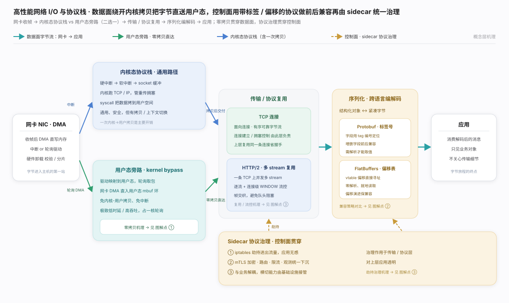
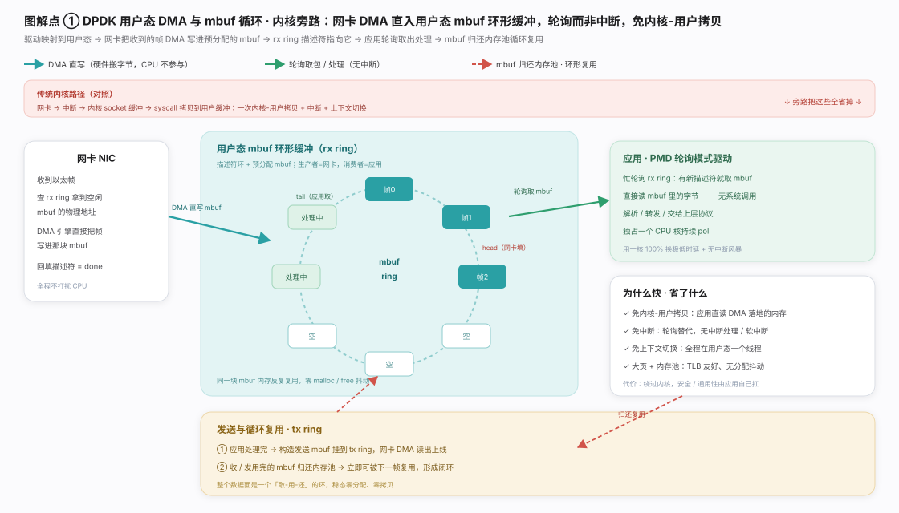
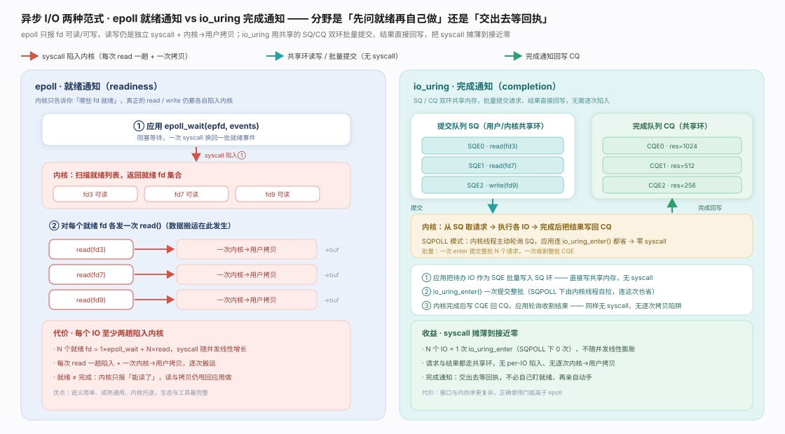
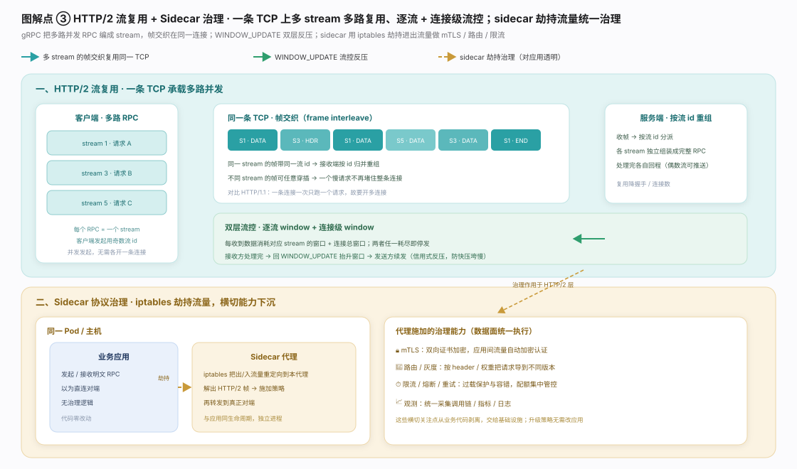
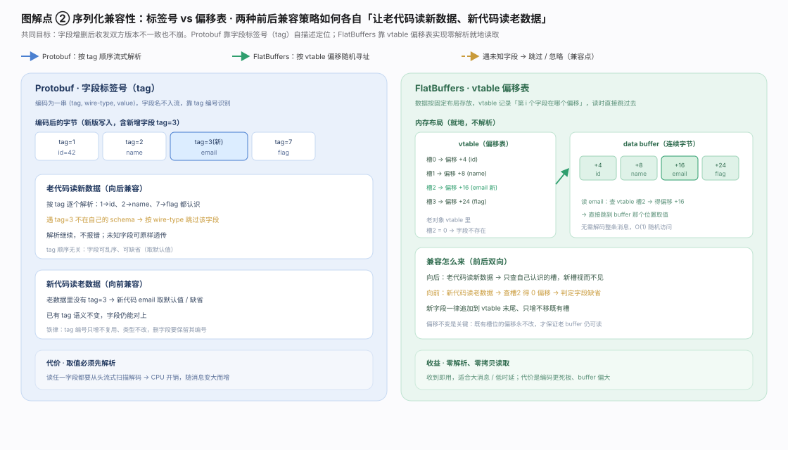
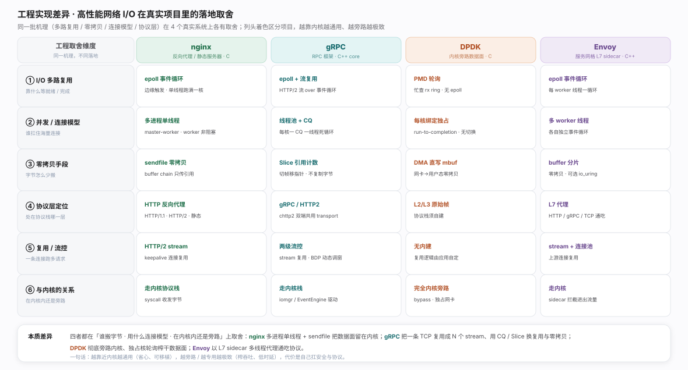

高性能网络 I/O 要省掉「字节从网卡到应用」链上多余的拷贝、陷入与上下文切换,同时让跨语言跨版本的服务用一套可演进协议高效通信。生态脊：网卡 DMA → (内核态协议栈 or 用户态旁路,二选一) → 传输／协议复用 → 序列化编解码 → 应用——数据面求最少搬运,控制面求兼容与复用。分工见生态图。

零拷贝／用户态旁路：核心洞察是「最贵的不是网络,而是主机内部搬运」。旁路把驱动映射到用户态,网卡 DMA 直写预分配 mbuf,应用以轮询模式驱动（PMD）忙查 rx ring 就地读——无 syscall、无中断、无内核-用户拷贝,mbuf 归还内存池复用,稳态零分配零拷贝。代价：独占一核持续轮询、绕过内核,安全与通用性自己扛。见图。

epoll vs io_uring：epoll 是就绪通知——内核只报「fd 可读／可写」,真正 read/write 仍是独立 syscall + 一次内核-用户拷贝(N 个就绪 fd 需 1 次 epoll_wait + N 次 read);io_uring 换成完成通知——请求批量写入共享提交队列 SQ、结果写回完成队列 CQ,两环共享内存,SQPOLL 下可近零 syscall。分野即「先问就绪再自己做」还是「交出去等回执」。见图。

HTTP/2 多路复用：每个 RPC 是带流 id 的 stream,帧交织在同一条 TCP 发送、接收端按流 id 重组,一个慢请求不堵整条连接(对比 HTTP/1.1 一连接一次一请求)。反压靠双层流控（每 stream 一窗口 + 连接总窗口,耗尽即停、WINDOW_UPDATE 抬升续发)的信用式反压;头部用 HPACK（静态表 + 动态表 + Huffman）压缩。见图。

序列化兼容性：字段增删后老新代码互读都不能崩。Protobuf 编成 ⟨tag, wire-type, value⟩ + varint,靠标签号自描述定位（未知 tag 跳过、缺失取默认,tag 只增不复用),代价是取任一字段都要从头流式解析;FlatBuffers 数据就地固定布局、vtable 记录字段偏移,读时查表直取——零解析、O(1) 随机访问,兼容来自「新字段只追加 vtable 末尾」。一句话——Protobuf 用解析换紧凑,FlatBuffers 用空间换零解析。见图。
两组机制在「谁来做搬运／解析、何时做」上取舍。异步 I/O：epoll 报就绪、读写甩回应用当场做、syscall 随并发线性增长;io_uring 报完成、SQ/CQ 双环批量、syscall 近零(SQPOLL 下为 0),代价是接口更复杂。序列化：Protobuf tag-varint 流式解析、O(n) 取值但紧凑;FlatBuffers vtable-offset 就地直取、O(1) 零解析但 buffer 偏大。一句话总纲：两组同构,分歧都落在「当场自己动手（就绪／流式）」还是「预置结构、按需直取（完成／偏移）」。见图。

同一批机理落到真实系统,取舍集中在谁搬字节、用什么连接模型、内核内还是旁路。nginx 走 master-worker 多进程、每 worker 单线程非阻塞事件循环（epoll 边缘触发),静态大文件靠 sendfile 把数据面留在内核零拷贝——省心可移植,吞吐受内核路径约束。gRPC 把一条 TCP/TLS 复用成 N 个 HTTP/2 stream,用 CompletionQueue（每核一 CQ 一线程)承载并发、Slice 引用计数切帧不复制、两级流控 + BDP 动态调窗——以编程模型复杂度换连接复用与自适应吞吐。两极对照：DPDK 用 PMD 轮询把 DMA 直写用户态 mbuf、彻底旁路内核(独占核),数据面榨到极致但须自建协议栈自扛安全;Envoy 以 L7 sidecar 多 worker 做 HTTP/gRPC/TCP 通吃代理、连接池复用上游。
一句话：越靠近内核越通用,越旁路／越专用越极致。nginx / gRPC 的实现细节已在本库 [nginx 进程与事件模型](../../projects/nginx/) 与 [gRPC HTTP/2 传输](../../projects/grpc/) 中源码核实。权威落地依据见：nginx 官方文档、gRPC Core Concepts、DPDK Programmer's Guide、Envoy Architecture Overview。